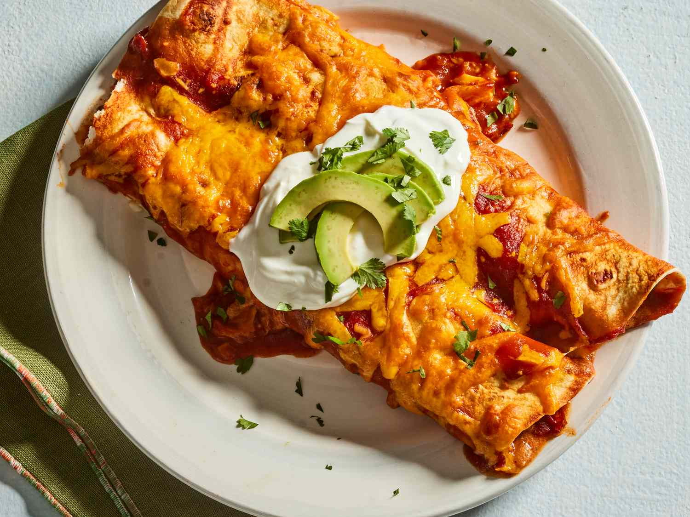

Enchilada
>

About Enchiladas
Enchiladas are a traditional Mexican dish made with rolled tortillas filled with various ingredients and topped with a savory sauce.
Ingredients
- 8 corn tortillas
- 2 cups shredded chicken
- 1 cup enchilada sauce
- 1 cup shredded cheese
- 1/2 cup diced onions
- 1/2 cup chopped cilantro
- Sour cream for serving
Instructions
- Begin with heating up oil on the stove
- Soften the tortillas in the hot oil for a few seconds on each side
- Fill each tortilla with shredded chicken, onions, and a sprinkle of cheese
- Roll the tortillas tightly and place them seam-side down in a baking dish
- Pour enchilada sauce over the rolled tortillas
- Sprinkle remaining cheese on top
- Bake in a preheated oven at 350°F (175°C) for about 20 minutes or until the cheese is melted and bubbly
- Garnish with chopped cilantro and serve with sour cream
- Enjoy your delicious enchiladas!